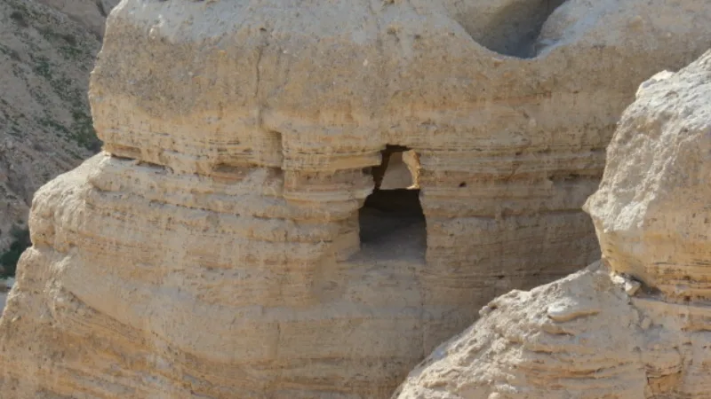
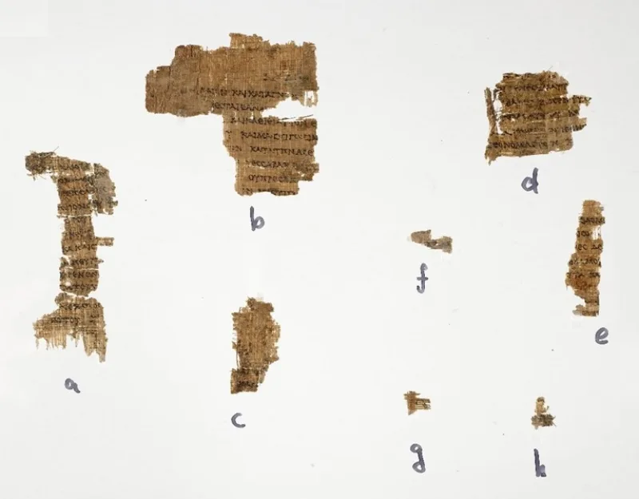

Bible copies 900 years older than Muhammad
UnrefutedNo good counter-argument has been published by Muslim scholars.
The question this settles
If the Bible was changed, it happened at some point in time. Manuscripts let us check when.
Muhammad received the Quran between 610 and 632 AD. So the question is simple.
What did the Bible look like before then?
What survives from before Muhammad
The Dead Sea Scrolls were copied between about 250 BC and 70 AD. They include the complete Great Isaiah Scroll, from about 125 BC, with Isaiah 53 intact.
The Septuagint, the Greek Old Testament, is older still — the 3rd to 2nd century BC. Codex Sinaiticus and Codex Vaticanus date to the mid-300s AD.
Each holds the whole New Testament, or nearly all of it.
What that means
These copies predate Muhammad by 250 to 900 years. They are the base of the modern critical editions.
So the Bible read in 600 AD is in substance the Bible read today. There is no window left for a later rewrite.
The best Muslim reply
IslamQA grants the manuscripts and moves the date. The corruption, they say, is older than any of these copies.
The books of Moses and Jesus were altered long before Qumran or Sinaiticus. They add two things.
The Scrolls show variety, with different editions of Jeremiah and Samuel. And the New Testament has hundreds of thousands of variants.
How strong is this argument?
Strong for you, because the reply falls into the first trap. If the Bible was already corrupt, the Quran told people to judge by a corrupt book.
And no variant in any manuscript removes the crucifixion, the resurrection or the divine Son. Those are secure across every copy we have.
What to say
"Which century do you think the change happened in? We can look at copies from before it."



How they answer this — at its strongest
They grant the old copies and say the change happened even earlier.
The strongest Muslim reply grants the manuscripts and redirects. Stability since 600 AD is beside the point. The corruption alleged is older than any of these witnesses. The originals of Moses and Jesus were lost or altered long before Qumran and Sinaiticus. So today's Bible faithfully carries a text that had already gone wrong.
IslamQA adds two supports. The Dead Sea Scrolls themselves show a plural text, with different editions of Jeremiah and Samuel. And the New Testament apparatus lists hundreds of thousands of variants. That marks the copying as human and fallible. It was not divinely guarded, as the Quran's is claimed to be.
The verdict
Strong for you: moving the date back only makes the Quran praise a broken book.
The redirect runs onto the first horn. Say the Bible was already corrupt centuries before Muhammad. Then the Quran told people to judge by a corrupt book. It said the Torah with them holds Allah's judgment. It told doubters to ask that book's readers. Those are commendations of a spoiled text.
The variant point is a category error. No Dead Sea Scroll and no New Testament variant removes the crucifixion, the resurrection or divine sonship. Those are the things the Quran needs absent. They are secure across every manuscript stream. The copies leave no window for the total change the doctrine requires.
Sources
- Israel Museum — The Great Isaiah Scroll (digital, c. 125 BCE)
- Codex Sinaiticus Project — dating (mid-4th century)
- Leon Levy Dead Sea Scrolls Digital Library (Israel Antiquities Authority)
- Anthony Ferguson, 'How Much Can the Most Famous Dead Sea Scroll Prove?' (Text & Canon Institute)